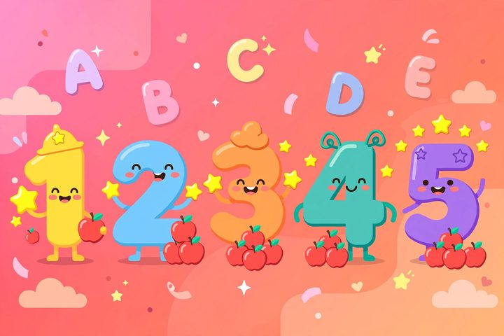
🔢 Học số & chữ
Đếm số, học chữ cái và tập xem giờ thật vui.
📊 29 chữ cái · 137 vần · số 0–100↗Cùng khám phá những con số, chữ cái và phép tính qua trò chơi thật vui nhé!
Chạm vào một hoạt động để bắt đầu

Đếm số, học chữ cái và tập xem giờ thật vui.
📊 29 chữ cái · 137 vần · số 0–100↗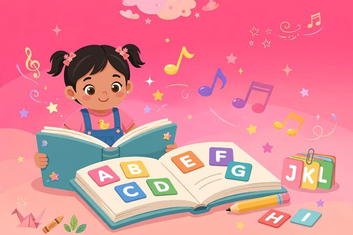
Chơi xếp chữ, tìm từ và đố vui từ ngữ tiếng Việt.
📊 13 trò chơi tiếng Việt↗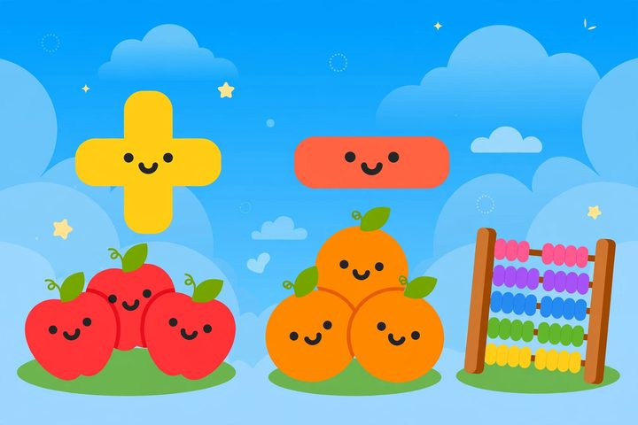
Cộng trừ, toán lời văn và thử thách siêu khó.
📊 11 dạng bài · 1.970 câu lời văn↗Đố vui lịch sử Việt Nam và thế giới, trả lời đúng ghi điểm.
📊 1.668 câu hỏi↗Đố vui địa lý, cờ các nước, bản đồ và phương hướng.
📊 1.479 câu hỏi↗Khoa học vui, an toàn giao thông, phòng cháy và kỹ năng sống mỗi ngày.
📊 393 câu hỏi↗Trắc nghiệm tin học bám sát sách giáo khoa từ lớp 3 đến lớp 12.
📊 560 câu hỏi↗Nghe những lời hay ý đẹp của ông cha ta.
📊 45 bài ca dao · 62 câu tục ngữ↗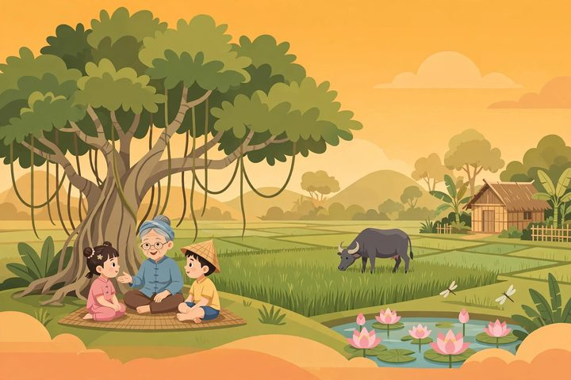
Nghe kể những câu chuyện cổ tích Việt Nam thật hay.
📊 18 truyện cổ tích↗Hàng nghìn câu đố vui để bé thử tài suy luận.
📊 774 câu đố↗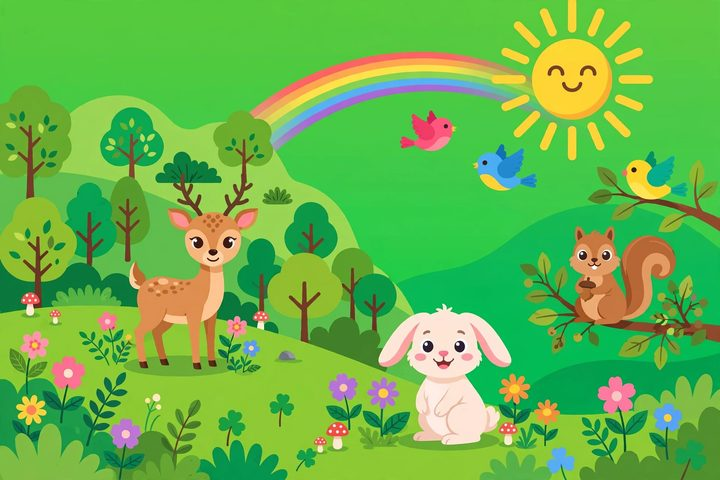
Khám phá cây cối, con vật và thế giới thiên nhiên kỳ thú.
📊 70 thẻ khám phá↗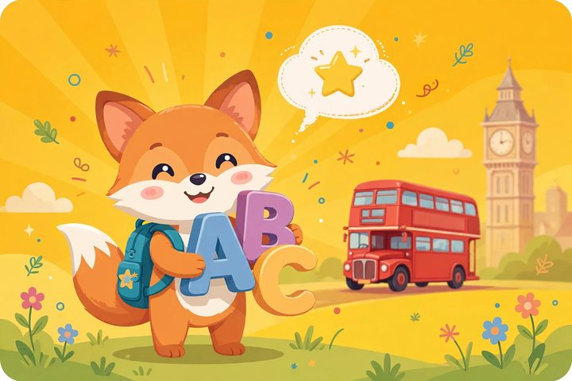
Học từ mới theo chủ đề và nghe phát âm chuẩn.
📊 98 chủ đề · 1.005 từ vựng↗Lắng nghe lời hay, chuyện đẹp của Việt Nam
Chạm vào thẻ để xem cách đọc và nghe phát âm.
Chọn âm đầu và nguyên âm. Bảng bên phải sẽ ghép tiếng ngang cùng 5 dấu thanh.
Ví dụ: b + a tạo thành ba, bá, bà, bả, bã, bạ.
Mở từng âm đầu để xem đủ nguyên âm và các thanh. Dấu “—” là tổ hợp không dùng theo quy tắc chính tả tiếng Việt.
Chạm vào từng âm đầu hoặc vần để xem ví dụ. Đây là bảng tra cứu đầy đủ để bé luyện ghép tiếng.
Âm đầu + vần = tiếng
Con sẽ xem cách ghép và nghe đọc mẫu.
Đọc âm đầu + vần, xem nghĩa gợi ý rồi chọn đúng dấu thanh để tạo tiếng.
Con sẽ nghe cách đọc và xem từ ngữ minh họa.
Quan sát kim giờ, kim phút và khung cảnh để đọc giờ nhé!
Kim ngắn chỉ giờ, kim dài chỉ phút. Khung cảnh giúp bé nhận biết ngày hay đêm.
Chọn chủ đề, nghe phát âm và học nghĩa tiếng Việt.
Bé hãy nghe, nhìn và đọc theo nhé. Nhấn 🔊 trên thẻ để nghe phát âm tiếng Anh.
Chủ đề được xếp thành 2 cột cho bé dễ tìm.
Chạm thẻ để nghe cách đọc.
Chơi đố vui, điền từ và hoàn thành chữ cái.
Chọn nghĩa đúng của từ tiếng Anh nhé!
Nghe từ tiếng Anh rồi chạm vào đúng chữ nhé!
Chọn từ tiếng Anh phù hợp với nghĩa của câu.
Nhìn nghĩa và hoàn thành chữ cái còn thiếu trong từ.
🔊 Âm thanh phát âm cần kết nối Internet. Có thể nhờ người lớn cùng luyện đọc nhé!
Chơi với chữ, từ ngữ, con số và phép tính — mỗi lượt lại có điều mới để khám phá!
Làm đủ 10 câu rồi nộp bài để xem điểm.
Phiếu tìm mở: chọn số ô và khoanh tất cả mục tiêu.
224 chủ đề để chọn; mỗi chủ đề có đúng 9 từ trong bảng 9×9.
Mỗi đề 10 câu, ngân hàng từ theo nhiều chủ đề. Xếp chữ thành từ có dấu.
Ngân hàng lớn theo nhiều chủ đề; mỗi đề 10 câu, dùng dấu > < = để so sánh.
Học biển báo và quy tắc an toàn.
Cấp 1: 10x10 → Cấp 5: 16x16 siêu khó. Dùng nút hoặc phím mũi tên.
Quan sát dãy sáng rồi lặp lại.
Điền các số 1–9 sao cho mỗi hàng, cột và ô 3×3 không lặp số.
Mẹo: bật Ghi chú để ghi nhiều khả năng trong một ô. Sudoku chỉ cho phép mỗi số xuất hiện một lần trong từng hàng, cột và vùng 3×3.
Xếp 3 dấu liên tiếp theo hàng ngang, dọc hoặc chéo.
Chọn ô trống để đặt dấu. Ai xếp đủ số dấu liên tiếp theo luật đã chọn trước sẽ thắng.
Chọn một số, rồi chọn cách đọc đúng.
Nhìn mẫu thật kỹ rồi khoanh tròn tất cả ký tự giống nhau trong bảng.
Sắp xếp các từ theo thứ tự để tạo thành một câu thật hay.
Chọn dạng bài rồi điền phần còn thiếu để hoàn thành từ hoặc câu.
Đếm hình hoặc trả lời câu đố — mỗi câu đúng được 1 sao!
Nhìn hình, tính nhẩm rồi nhập đáp án.
Chọn một đáp án đúng trong bốn lựa chọn.
Chọn một hoạt động, làm 10 câu rồi nộp bài để xem điểm.
Chạm một thẻ để làm 10 câu; xong bài mới hiện điểm.
Làm 10 câu rồi nộp bài để xem điểm.
Tra cứu nhanh công thức tiểu học và trung học.
Chạm một phép tính rồi chọn đáp án đúng.
Chọn dấu <, > hoặc =.
Tính nhẩm hai bên rồi chọn dấu.
Các số thay đổi theo cùng một bước. Con tìm quy luật nhé!
Cùng bé nghe lời hay, học điều đẹp và khám phá những câu chuyện Việt Nam.
Chọn một bài hoặc câu chuyện rồi nhấn Đọc cho bé. Giọng đọc cần kết nối Internet.
🔊 Nút “Nghe đáp án” chỉ phát giọng đọc, không hiển thị đáp án bằng chữ.
Chạm vào từng hình để xem tên và tìm hiểu.
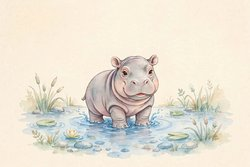
Hà mã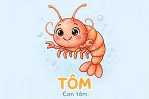
Tôm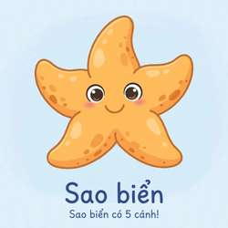
Sao biển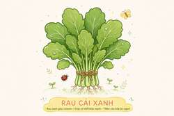
Rau cải xanh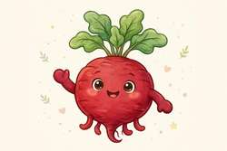
Củ dền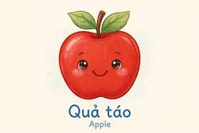
Táo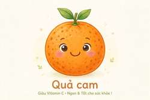
Cam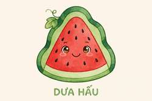
Dưa hấu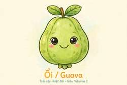
Ổi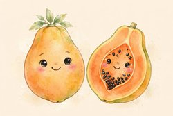
Đu đủ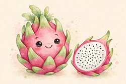
Thanh long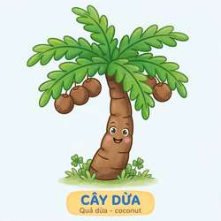
Cây dừa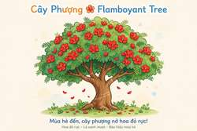
Cây phượng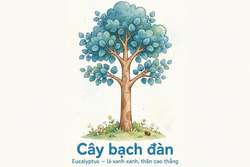
Cây bạch đàn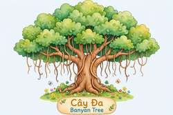
Cây đa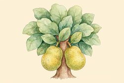
Cây mít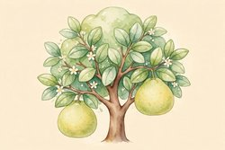
Cây bưởiChọn môn, chọn chủ đề, trả lời 10 câu hỏi, bấm đáp án để biết đúng sai ngay và đọc giải thích nhé!